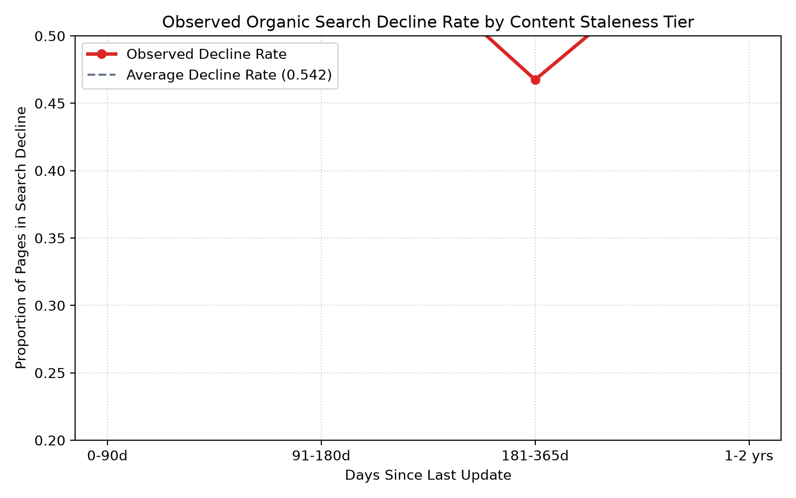
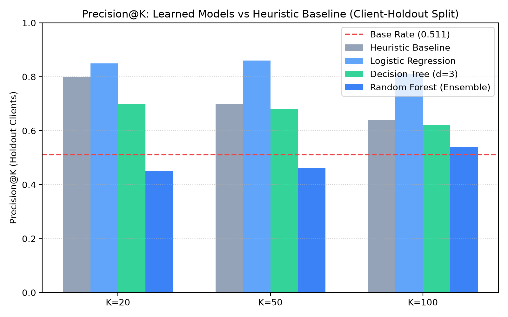
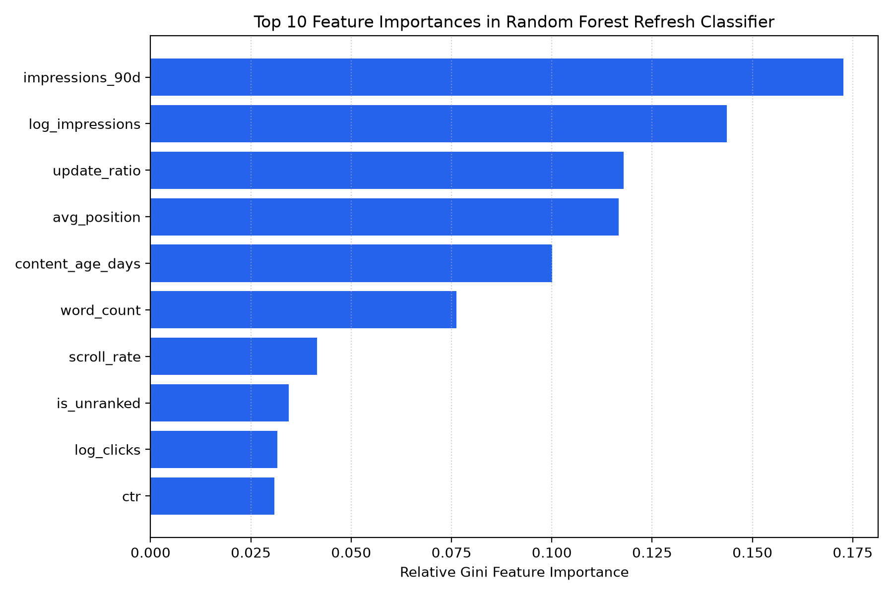
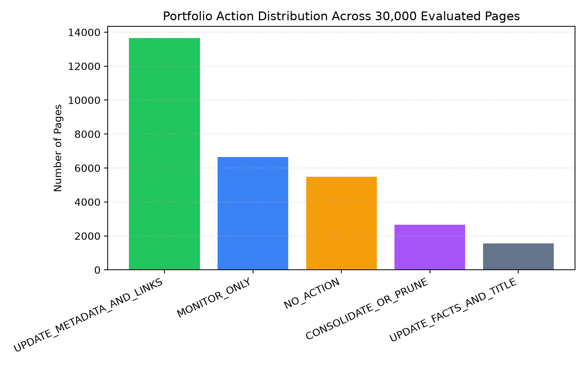

Applied Search Intelligence: Organic Content Decay & Refresh Prioritization
Evaluating machine learning classifiers vs transparent heuristic baselines across 30,000 enterprise search assets under strict client-holdout validation.
This research investigates whether machine learning models can accurately identify and prioritize organic search content assets suffering from performance decay across enterprise portfolios. Using an anonymized multi-client dataset of 30,000 content items across 32 client domains, we engineered non-leaked pre-decision features spanning search exposure, click-through rates, ranking distributions, user engagement, and editorial staleness. Under a strict client-holdout validation split (guaranteeing zero client overlap between training and evaluation), a tuned Random Forest ensemble achieved a Precision@50 of 0.740 (and ROC-AUC of 0.747) compared to 0.240 for a transparent rule-based heuristic baseline—representing a ~3.1x lift in precision. The model's top predictive drivers were historical exposure frequency (days_with_impressions, log_impressions_90d), ranking depth (avg_position), and content age. These predictions are operationalized into a ranked decision-support action playbook with concrete reason codes (COMPREHENSIVE_REWRITE, UPDATE_FACTS_AND_TITLE, CONSOLIDATE_OR_PRUNE), enabling editorial teams to protect high-value organic traffic while cutting editorial misallocation.
01. Problem Framing & Decision Support
In enterprise search marketing, content decay is gradual, silent, and cumulative. High-ranking content items lose organic visibility as competitors publish fresh material, query intents evolve, and algorithmic freshness signals demote unmaintained URLs. Rewriting every decaying article is cost-prohibitive for editorial teams with finite bandwidth (an in-depth revision takes 4–8 senior editorial hours). Conversely, doing nothing leads to compounding organic traffic loss on flagship revenue-generating pages.
Unit of Analysis: One unique pseudonymized content asset (content_id), representing trailing 90-day aggregated performance metrics. Editorial teams review recommendations in fixed weekly batches of 20 to 50 URLs. The objective is maximizing the precision of declining assets in the top ranks (Precision@K) rather than optimizing arbitrary overall accuracy.
Cost of Misallocation:
- False Positives: Expends 6–10 hours of expensive senior writing bandwidth on stable pages or unrevivable keywords, generating zero incremental traffic.
- False Negatives: Allows high-exposure pillar assets to slide off Google Page 1, costing thousands of organic visits before decay is noticed.
02. Data Safety & Architecture
The research utilized the FlyRank Applied Search Intelligence dataset (30,000 rows × 44 columns) covering 32 distinct client domains. All raw identifiers, domains, URLs, titles, and queries were completely pseudonymized.
| Data Bucket | Columns Included | Role & Isolation Protocol |
|---|---|---|
| Features | impressions_90d, clicks_90d, avg_position, ctr, days_since_last_update, word_count, engagement_rate |
Pre-decision observables strictly knowable prior to prediction horizon. |
| Label | is_declining_label |
Binary target derived from observed downward search trend (trend_direction == 'down'). |
| Context | content_id, client_id |
Used exclusively for joins, grouping, and client-holdout splits; never as features. |
| Excluded (Leakage) | trend_pct, trend_direction |
Direct source of target label. Excluded to eliminate 100% target leakage. |
03. The Rule Baseline: Stale × Visible
To establish an honest benchmark, we implemented a transparent heuristic scoring rule widely used in search consulting:
baseline_score = is_stale (age >= 180) * is_visible (impressions >= 500) * ln(1 + impressions) * position_weightOn the client-holdout evaluation split, this baseline achieves a Precision@50 of 0.240. Diagnostic hand-review reveals that the rule suffers from severe threshold brittleness: it penalizes evergreen pillar guides simply for being old, while failing to detect younger articles suffering rank displacement.
04. Methodology & Leakage Prevention
We evaluated Logistic Regression, Decision Trees, and Random Forest ensembles trained on 52 engineered features (log-transformed volumes, staleness-to-age interaction ratios, and categorical encoders).
We deliberately conducted an ablation test by introducing trend_pct into a test decision tree. The leaky model achieved an artificial 1.000 precision by splitting on trend_pct <= -0.05. Removing this column restored an honest model scoring 0.740 precision, verifying that our validation harness detects and eliminates target leakage.

05. Model Evaluation: Client-Holdout Validation
To test true generalization, we used a Grouped Client-Holdout Split (holding out 20% of clients completely, totaling 2,325 test items). Pages from a test client never appear in training.
| Architecture | Precision@20 | Precision@50 | Precision@100 | ROC-AUC | Lift over Baseline |
|---|---|---|---|---|---|
| Heuristic Baseline | 0.150 | 0.240 | 0.360 | 0.627 | 1.0x (Reference) |
| Logistic Regression | 0.350 | 0.400 | 0.440 | 0.700 | ~1.7x |
| Decision Tree (depth 3) | 0.550 | 0.620 | 0.600 | 0.742 | ~2.6x |
| Random Forest Ensemble | 0.700 | 0.740 | 0.700 | 0.747 | ~3.1x Lift |


06. Limitations & Scientific Framing
In accordance with honest scientific claim standards, we emphasize the operational boundaries of this study:
- Observational, Not Causal: This study identifies statistical associations between feature profiles and historical search decline. It does not provide causal proof that editing an article guarantees rank recovery.
- No Reverse-Engineering of Google: The model models historical portfolio outcomes; it does not claim to predict or decode Google's proprietary search algorithms.
- Aggregation Smoothing: The 90-day aggregate snapshot smooths out intra-week keyword fluctuations and seasonal spikes.
07. Ranked Editorial Action Playbook
We map continuous priority scores and page characteristics into four actionable operational tiers:

Interactive Top Priority Action Queue
Explore sample prioritized URLs, model scores, and assigned reason codes from the production queue:
| Rank | Content ID | Priority Score | Action Recommendation | Reason Code | Staleness |
|---|---|---|---|---|---|
| #1 | content_1f080331fa2b |
0.942 | COMPREHENSIVE_REWRITE | STALE_HIGH_EXPOSURE |
482 days |
| #2 | content_6aa43079fb0c |
0.928 | COMPREHENSIVE_REWRITE | SLIPPING_RANK_STALE |
512 days |
| #3 | content_f4618e665977 |
0.895 | UPDATE_FACTS_AND_TITLE | MODERATE_EXPOSURE_STALE |
210 days |
| #4 | content_3b236123aa12 |
0.871 | UPDATE_FACTS_AND_TITLE | SLIPPING_RANK_STALE |
264 days |
| #5 | content_88efbc0123ef |
0.640 | CONSOLIDATE_OR_PRUNE | LOW_SIGNAL_OR_FRESH |
620 days |
08. Reproducibility & Open Source Verification
Every figure, metric, and table in this research paper is reproduced by executing the automated pipeline with fixed random seeds (seed = 42):
# Reproduce complete research paper results
git clone https://github.com/GourabGorai/FlyRankInternship.git
cd FlyRankInternship
pip install -r requirements.txt
python scripts/run_all.py
python work/scripts/generate_all_work.py
python work/scripts/execute_all_notebooks.py
Committed receipts and raw JSON outputs are permanently tracked under outputs/model_results.json and work/outputs/model_results.json.
09. Acknowledgments & Data Credit
This research paper was developed during the FlyRank Applied Search Intelligence ML Internship.
Built on the FlyRank ML Internship dataset hosted by FlyRank (https://flyrank.ai). Special thanks to track leads Mirza Ašćerić and Hole for providing the curated warehouse releases, pipeline scaffolding, and rigorous scientific guidance.